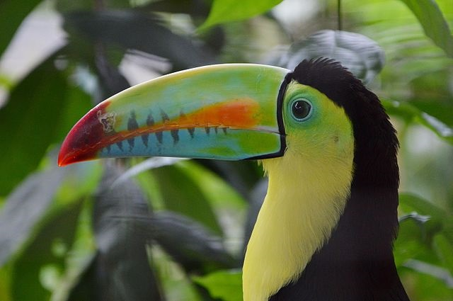

Привет!
Я фенек — миниатюрная лисица с крупными относительно тела ушами, которая живёт в пустынях Северной Африки. Иногда её относят к особому роду Fennecus. Своё имя этот зверёк получил от арабского слова فَنَك (фанак), что на одном из разговорных диалектов означает «лиса».

Привет! А я Радужный тукан
Имеею большой полый клюв, достигающий 17 см в длину. Окрас клюва зелёный, с голубыми вкраплениями в нижней части и с оранжевой полосой сбоку. Оперение на спине, животе, и верхней части крыльев чёрное матовое, на верхней части шеи — чёрное с красным отливом. Грудь и щеки жёлто-лимонного оттенка, нижняя часть хвоста — ярко-красная.